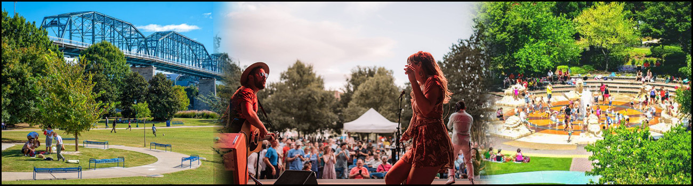

Living In Chattanooga
- Population: 187,030 (2023)
- Unemployment rate: 3.8% (Nov 2024)
- Metro population: 562,647
- Area: 143.2 mi²
- Elevation: 676′
What Makes Chattanooga A Great Place To Live
Beyond its scenic beauty and outdoor attractions, Chattanooga offers a rich cultural heritage, a sense of community, and unique historical features that make it stand out. From hidden underground streets to a vibrant music scene, these local insights reveal why Chattanooga is not just a place to visit but a wonderful place to call home.

Pros and Cons of Chattanooga
Pros
- Affordable Cost of Living – Housing and overall expenses are lower compared to many major cities.
- Mild Climate – Generally mild winters with hot summers, making it a great place for outdoor enthusiasts.
- Growing Job Market – Diverse job opportunities in tech, manufacturing, healthcare, and tourism. Companies like Volkswagen and Amazon have a presence here.
- Gig City (High-Speed Internet) – Chattanooga was one of the first U.S. cities to offer 1-gigabit fiber internet citywide, making it a hotspot for remote workers and startups.
- Thriving Arts & Culture Scene – A mix of museums, music festivals, and creative spaces like the Bluff View Art District and the Tivoli Theatre.
- Good Location – Close to major cities like Atlanta (2 hours), Nashville (2 hours), and Knoxville (1.5 hours).
- Lower Taxes – Tennessee has no state income tax, which is a big financial advantage.
Cons
- Hot, Humid Summers – Summers can be very humid, with temperatures often in the high 80s and 90s.
- Pollen & Allergies – If you have allergies, Chattanooga ranks high for pollen, especially in the spring and fall.
- Traffic & Infrastructure Issues – While not as bad as larger cities, I-24 and I-75 can get congested, and road conditions in some areas are poor.
- Crime Rates – Some areas have higher crime rates, particularly in parts of downtown and East Chattanooga. However, crime varies by neighborhood.
- Public Transportation is Limited – The CARTA bus system is available, but having a car is necessary for most residents.
- Job Market is Growing but Still Limited – While it’s improving, some industries (especially high-paying tech and finance jobs) are still not as developed as in bigger cities.
- Seasonal Tornado Risk – Chattanooga is in Tornado Alley, so severe weather can be a concern in spring and summer.
Is Chattanooga Right for You?
If you love outdoor adventures, affordability, and a small-city feel with big-city amenities, Chattanooga could be a great fit! However, if a bigger city isn't for you, you might want to consider other options.
Here are some towns surrounding Chattanooga, TN:
- East Ridge, TN – Directly bordering Chattanooga to the east, known for Camp Jordan Park and easy interstate access.
- Red Bank, TN – A small town just north of downtown Chattanooga with a suburban feel.
- Signal Mountain, TN – A scenic town atop Walden Ridge, offering stunning views and outdoor activities.
- Lookout Mountain, TN/GA – A small community straddling the Tennessee-Georgia border, home to Rock City and Ruby Falls.
- Hixson, TN – A northern suburb of Chattanooga with shopping and parks.
- Soddy-Daisy, TN – A small city located about 15 miles north of Chattanooga, known for its outdoor recreation, small-town charm, and proximity to Chickamauga Lake and the Tennessee River.